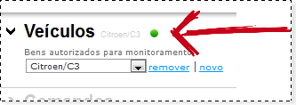
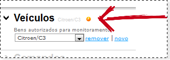
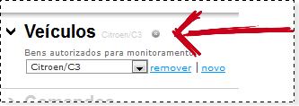

| Dica: Verificando status do sinal |
| Voltar |
| Como verificar o status
Veja os indicativos do sinal do GPS. |
|
A indicação verde significa que o aparelho está funcionando sem problemas, e as coordenadas estão sendo obtidas com sucesso.  A indicação laranja significa que o aparelho está funcionando sem problemas, porém em área de sombra, ou seja, áreas onde o sinal do satélite não alcança , como túneis, garagens no subsolo, galpões fechados ou locais fechados como no interior das residências, escritórios, etc.  A indicação cinza significa que nenhuma coordenada foi obtida no último logon. Verifique se a bateria do aparelho está ligada e se o chip possui saldo disponível para o rastreamento.  |
| Voltar |